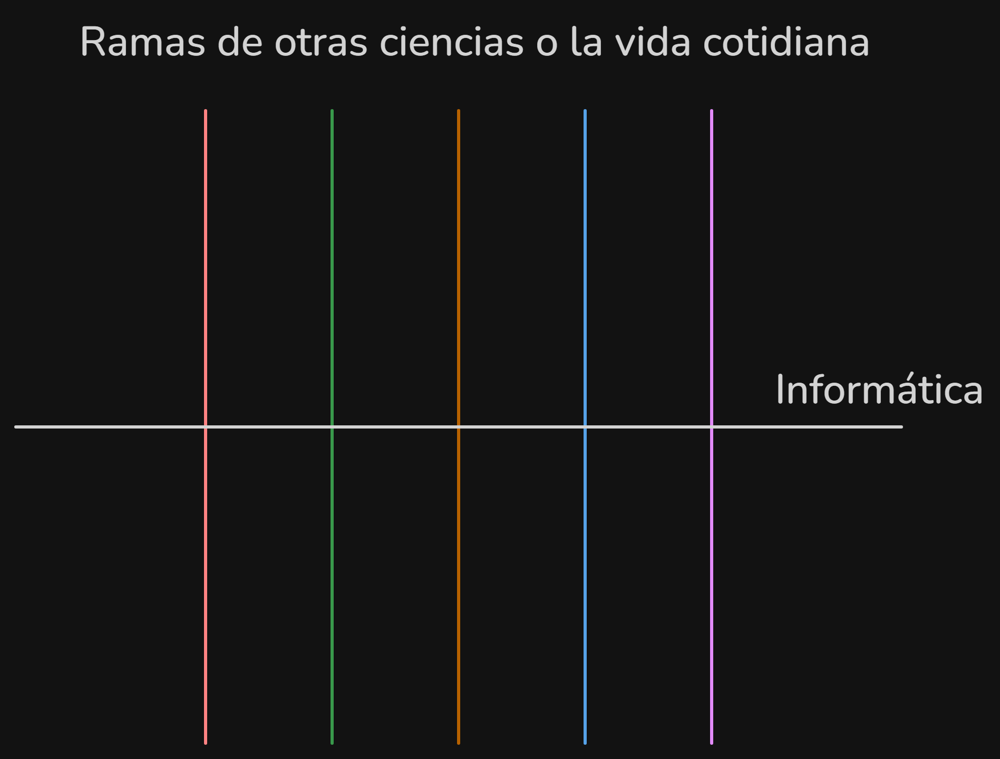
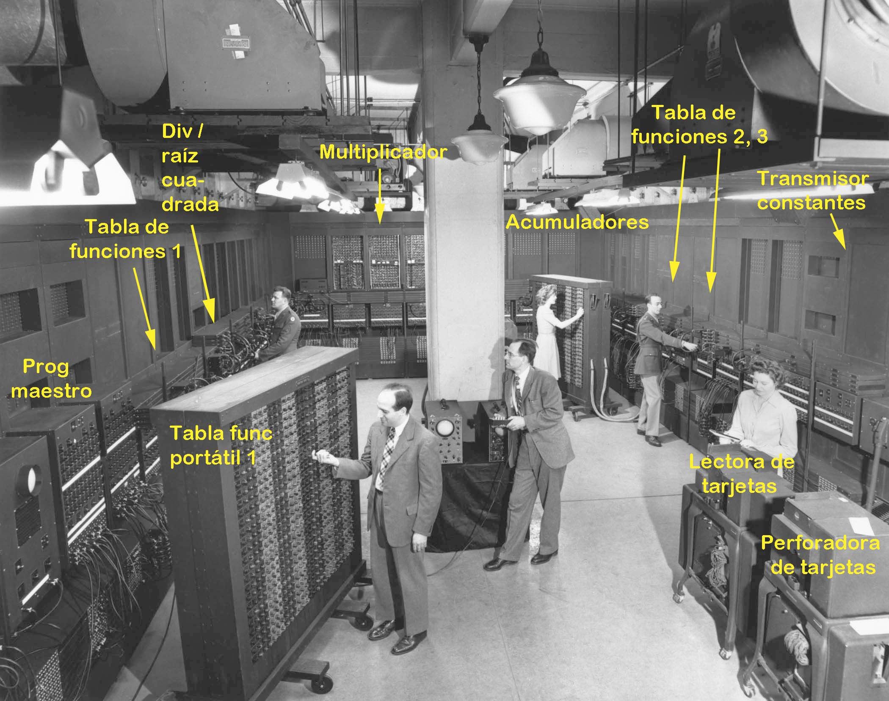
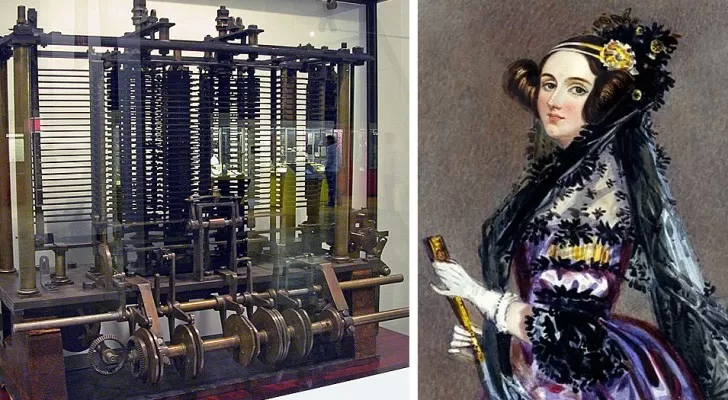
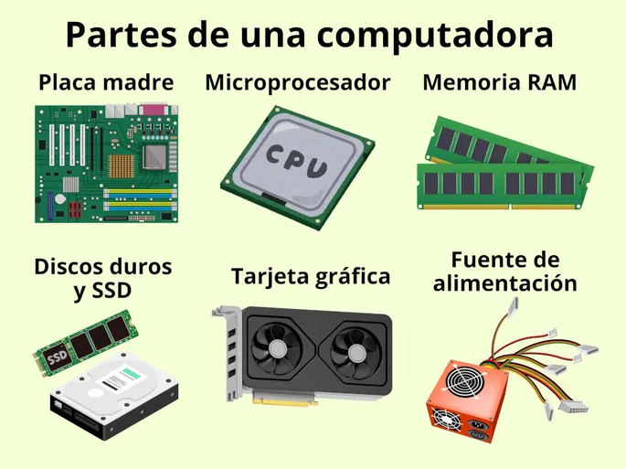
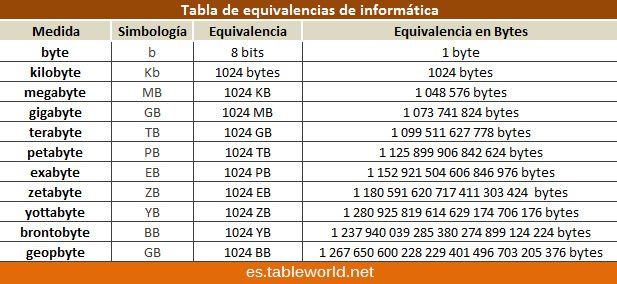
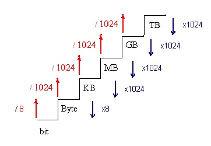
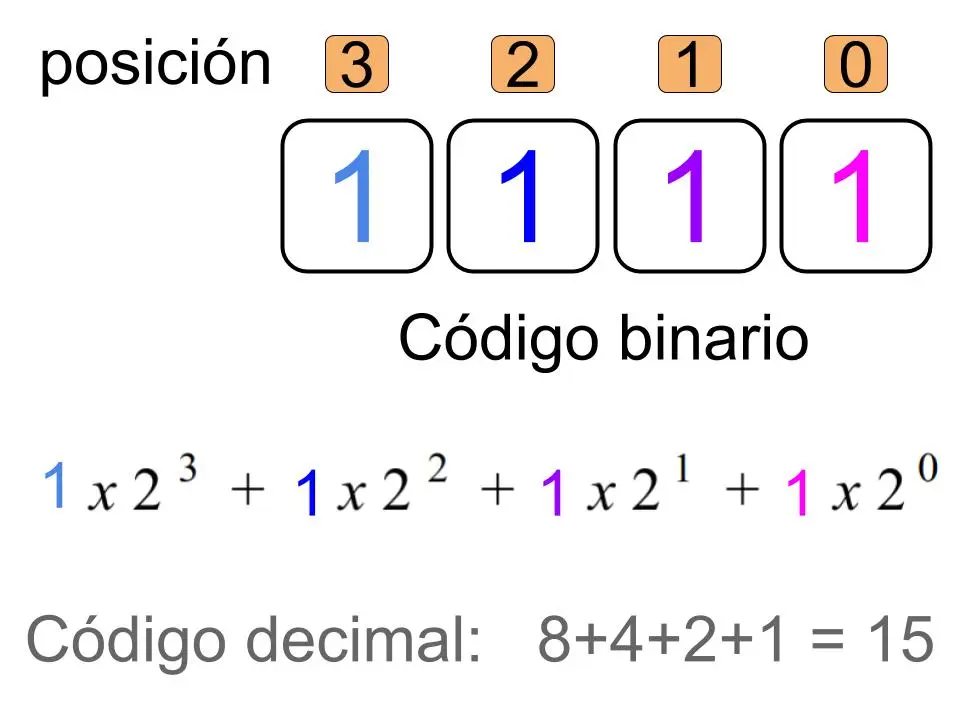

Introducción a la Informática
🔎 ¿Qué es la Informática?
La informática es la ciencia que estudia el tratamiento automático de la información mediante computadoras. Es un campo interdisciplinario que abarca desde la teoría de la computación hasta la práctica de la programación y el desarrollo de software.
Informática proviene del francés 'informatique', que a su vez se deriva de 'information' (información) y 'automatique' (automático). Fue acuñado por el ingeniero francés Philippe Dreyfus en 1962 para describir la nueva disciplina que surgía con el desarrollo de las computadoras.

🖥️ ¿Qué es una computadora?
Una computadora es una máquina que procesa información siguiendo un conjunto de instrucciones (programas). Está compuesta por hardware (componentes físicos) y software (programas y sistemas operativos).
📜 Historia de las computadoras
La ENIAC (Electronic Numerical Integrator and Computer) fue la primera computadora electrónica de propósito general, construida entre 1943 y 1945 en la Universidad de Pensilvania por John Presper Eckert y John William Mauchly. Financiada por el ejército de los EE. UU. para calcular trayectorias balísticas, funcionaba con más de 17,000 tubos de vacío, pesaba 27 toneladas y ocupaba 167 metros cuadrados. Aunque era extremadamente rápida para su época, consumía una gran cantidad de energía y requería un mantenimiento constante.

🧑🏫 Primeros programadores
Las primeras programadoras fueron un grupo de mujeres que trabajaron en la ENIAC. Entre ellas se encontraban Jean Jennings Bartik, Frances Elizabeth Holberton, Kathleen McNulty Mauchly Antonelli, Marlyn Wescoff Meltzer, Ruth Lichterman Teitelbaum y Betty Snyder Holberton. Estas mujeres fueron pioneras en el campo de la programación y contribuyeron significativamente al desarrollo de la informática.
Aunque la primera programadora de la historia es Ada Lovelace, quien en el siglo XIX escribió el primer algoritmo destinado a ser procesado por una máquina, específicamente la máquina analítica de Charles Babbage. Ada Lovelace es considerada la primera programadora de la historia debido a su trabajo visionario en la informática.

⚙️ Hardware - Partes de una computadora (básico)
-
Placa base o madre (Motherboard): Es la tarjeta principal que conecta todos los componentes de la computadora, permitiendo la comunicación entre ellos.
-
CPU (Unidad Central de Procesamiento) o Microprocesador: Es el cerebro de la computadora, encargado de ejecutar las instrucciones de los programas.
-
Memoria RAM (Memoria de Acceso Aleatorio): Es la memoria de trabajo de la computadora, donde se almacenan temporalmente los datos y programas que están en uso. Es Volátil ya que al apagar la computadora, se pierde toda la información almacenada en ella.
-
Almacenamiento: Dispositivos como discos duros o unidades de estado sólido (SSD) que almacenan datos de forma permanente.
-
Periféricos: Dispositivos externos como teclados, ratones, monitores, impresoras, etc., que permiten la interacción con la computadora.

Para que una computadora funcione correctamente, es necesario que todos sus componentes trabajen en armonía. La CPU procesa las instrucciones, la RAM almacena los datos temporales, el almacenamiento guarda la información de forma permanente y los periféricos permiten la interacción con el usuario.
Un buen ejemplo en vivo de esta armonía se puede observar en Vonsim, un simulador de tan sólo un CPU y una RAM, que permite visualizar cómo funcionan estos componentes en conjunto para ejecutar programas.
📝 Software - ¿Qué es un programa?
Un programa es un conjunto de instrucciones escritas en un lenguaje de programación que una computadora puede entender y ejecutar para realizar una tarea específica. Los programas pueden variar desde simples scripts hasta complejas aplicaciones de software.
🧑💻 Tipos de programas
-
Scripts: Programas simples que automatizan tareas específicas, como scripts de shell, scripts de Python, etc.
-
Sistemas operativos: Software que gestiona los recursos de la computadora y proporciona una interfaz para que los usuarios interactúen con el Hardware (ej. Windows, macOS, Linux).
-
Aplicaciones: Programas diseñados para realizar tareas específicas para el usuario, como procesadores de texto (Word), navegadores web (Google Chrome), juegos, etc. (Tienen una "aplicación" específica para el usuario).
-
Software de desarrollo: Herramientas utilizadas por los programadores para escribir, probar y depurar código, como editores de texto, entornos de desarrollo integrado (IDE), compiladores, etc.
-
Software de sistema: Programas que ayudan a gestionar y mantener el sistema informático, como antivirus, herramientas de diagnóstico, etc.
🧑💻 Lenguajes de programación
Los lenguajes de programación son sistemas de comunicación de alto nivel de abstracción que permiten a los programadores escribir instrucciones que una computadora puede entender y ejecutar. Existen muchos lenguajes de programación, cada uno con sus propias características y usos específicos. Algunos de los lenguajes de programación más populares incluyen:
- Python: Conocido por su sintaxis sencilla y su amplia biblioteca de módulos, es utilizado en una variedad de campos, desde el desarrollo web hasta la ciencia de datos y la inteligencia artificial.
-
Java: Un lenguaje de programación orientado a objetos que es ampliamente utilizado en el desarrollo de aplicaciones empresariales, aplicaciones móviles y sistemas embebidos.
-
C++: Un lenguaje de programación de alto rendimiento que se utiliza en el desarrollo de videojuegos, sistemas operativos y aplicaciones que requieren un control preciso sobre los recursos del sistema.
-
JavaScript: Un lenguaje de programación que se ejecuta en el navegador web y se utiliza para crear sitios web interactivos y aplicaciones web.
-
Go: Un lenguaje de programación desarrollado por Google, conocido por su simplicidad y su capacidad para manejar concurrencia, lo que lo hace ideal para el desarrollo de aplicaciones de red y sistemas distribuidos.
-
Rust: Un lenguaje de programación que se centra en la seguridad y el rendimiento, utilizado en el desarrollo de sistemas y aplicaciones que requieren un alto nivel de seguridad y eficiencia.
-
Swift: Un lenguaje de programación desarrollado por Apple, utilizado para el desarrollo de aplicaciones para iOS, macOS, watchOS y tvOS.
-
Kotlin: Un lenguaje de programación que se ejecuta en la máquina virtual de Java (JVM) y es utilizado principalmente para el desarrollo de aplicaciones Android, aunque también se puede usar para el desarrollo de aplicaciones de escritorio y web.
0️⃣1️⃣ El lenguaje de las computadoras
Las computadoras no entienden el lenguaje humano, sino que utilizan un lenguaje de bajo nivel llamado lenguaje máquina, que consiste en una serie de códigos binarios (0s y 1s) que representan instrucciones específicas para la computadora. Para facilitar la programación, se utilizan lenguajes de alto nivel que son más fáciles de entender para los humanos, y luego se traducen al lenguaje máquina mediante un proceso llamado compilación o interpretación.
🧮 Código Binario
El código binario es el sistema de numeración que utiliza solo dos dígitos, 0 y 1, para representar información. En el contexto de las computadoras, cada dígito binario se llama bit (contracción de "binary" y "digit"). Un grupo de 8 bits forma un byte, que es la unidad básica de almacenamiento de datos en una computadora. El código binario se utiliza para representar todo tipo de información, desde números y texto hasta imágenes y sonidos, mediante combinaciones específicas de bits.

📏 Regla de conversiones
Equivalencias en Bytes

Binario a Decimal
En el sistema binario, cada dígito representa una potencia de 2. Por ejemplo, el número binario 101 representa (1 * 2^2) + (0 * 2^1) + (1 * 2^0) = 4 + 0 + 1 = 5 en decimal.

Por ejemplo, el número decimal 5 se representa en código binario como 101, y la letra "A" se representa como 01000001 en código ASCII.
🧑💻 Compiladores vs intérpretes
-
Compiladores: Son programas que traducen el código fuente de un lenguaje de alto nivel a lenguaje máquina antes de que se ejecute el programa. El resultado es un archivo ejecutable que puede ser ejecutado directamente por la computadora. Ejemplos de lenguajes compilados incluyen C, C++ y Go.
-
Intérpretes: Son programas que ejecutan el código fuente de un lenguaje de alto nivel línea por línea, sin necesidad de traducirlo a lenguaje máquina previamente. Esto permite una mayor flexibilidad y facilidad de depuración, pero puede resultar en un rendimiento más lento en comparación con los programas compilados. Ejemplos de lenguajes interpretados incluyen Python, JavaScript y Ruby.
-
Lenguajes híbridos: Algunos lenguajes de programación, como Java y C#, utilizan un enfoque híbrido que combina la compilación y la interpretación. El código fuente se compila a un lenguaje intermedio (bytecode) que luego es interpretado por una máquina virtual (JVM para Java, CLR para C#).